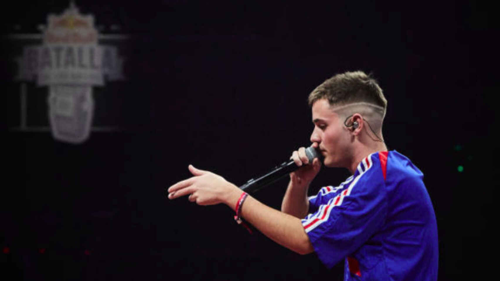

Cita a Gazir
Y hoy estoy surfeando en el mar que llore ayer.
Gazir paso por una depresion despues de tantas criticas de miles de personas con tan solo 19 años.

Y hoy estoy surfeando en el mar que llore ayer.
Gazir paso por una depresion despues de tantas criticas de miles de personas con tan solo 19 años.
Gabriel Sánchez Poyal, mejor conocido como Gazir, es un freestyler español de origen asturiano. Destacado por sus ingeniosas respuestas al momento, Gazir es considerado uno de los mejores freestylers de corta edad en España y el mundo, por sus victorias sobre MC's como Zasko, Walls, Errecé y BTA, también por el gran nivel que muestra en sus batallas.
Gazir es el actual campeon de la Redbull nacional de España y el vigente campeon de la FMS internacional, lo que le convierte en uno de los freestylers mas temidos del circuito.
Gazir no dispone de tantos titulos ya que apenas lleva un año en el circuito competitivo, pero en este periodo de tiempo ha conseguido coronarse como campeon internacional en FMS y campeon nacional en Redbull, todo eso en menos de un mes.
Gazir se dio a conocer en una redbull regional de Alicante cuando tenia 16 años, la cual ganó contra Zasko Master en la final, uno de los raperos mas dificiles de ganar argumentalmente en la escena de España, el cual consiguio ganar a Gazir en su debut de FMS.
Sweet Pain: Sin duda alguna, un rival a destacar seria Sweet Pain, el cual se lo puso muy dificil en el ranking de ascenso, y en FMS despues de dos replicas sin poder ganar al Asturiense, pero es evidente que con el paso del tiempo el nivel de Sweet Pain se esta quedando muy por detras de Gazir, como se ha podido demostrar en la final de la Redbull Nacional 2021.
Chuty: Cuando hablamos de rivales hay que tener en cuenta a Chuty, sin duda el rival mas dificil para cualquier tipo de freestyler, demostrando hasta la fecha, que es invencible, ya que su ingenio, punch y puesta en escena, le convierten en el mejor freestyler de la historia, siendo capaz de hacer batallas impolutas despues de 10 años en el circuito.
Zasko Master: Zasko Master tambien ha sido un hueso duro de roer para Gabriel, siendo una de sus unicas dos derotas en el formato FMS, habiendo disputado 18 batallas en el formato.
Bnet: Y por ultimo pero no por ellos el menos importante, Bnet seria un duro rival para Gazir tambien, habiendo conseguido ganarle el torneo que tanto ansiaba despues de haber conseguido 6 mvp, mientras que Bnet no conseguiria ninguno, hasta la batalla de la final contra Gazir, es evidente que el nivel del asturiano esta muy por encima del de Bnet, admitido por el madrileño previamente, pero las malas decisiones del publico y tener a todos los participantes en contra le jugo una mala pasada.
